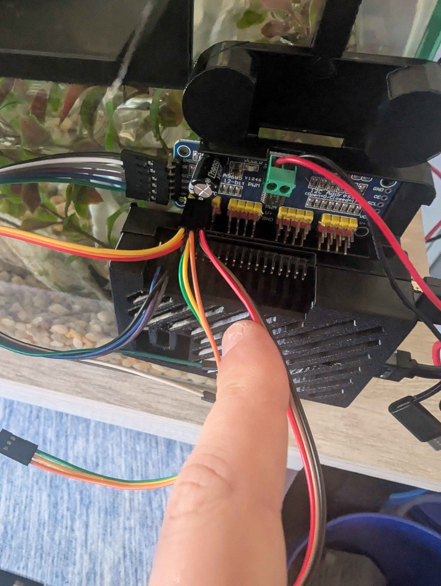

Raspberry Pi
Tank nodes collect cameras and run local controls. The Sync hub combines their views and serves the display.
Deployed family; exact Pi models pending.
Official Pi products & resellers >>SYNC TANK / THE WORKBENCH
A little less mystery. A lot fewer loose wires.
These hardware families have been used in the project. The source code and assembly photos identify some details; the project owner reports the MG995 motors and NETGEAR PoE switch as used and tested. Exact models, supply ratings and dated test results still need recording.
Tank nodes collect cameras and run local controls. The Sync hub combines their views and serves the display.
Deployed family; exact Pi models pending.
Official Pi products & resellers >>Converts I2C commands into PWM servo signals. The current configuration uses bus 1, address 0x40 and 50 Hz.
Driver and board photo documented; PCB brand pending.
Reference board & documentation >>Move the inspection mechanisms. Check the actual label, supplier and rotation variant before matching a motor or setting its limits.
Owner-reported use and tests; variant and measurements pending.
TowerPro manufacturer reference >>That legacy URL now describes MG996R. Its specifications are not a verified MG995 datasheet.
Connects the tank nodes and Sync hub over Ethernet, and supplies power to compatible PoE receivers.
Owner-reported use and tests; switch model and budget pending.
NETGEAR PoE range >>A compatible receiver converts PoE into the Pi's required supply. A bare Ethernet socket does not power a Pi.
PoE path documented; installed receiver pending.
Official PoE HAT reference >>This specific HAT supports Pi 3 B+ / Pi 4 B. Match accessories to your actual Pi.
The motors need their own correctly rated supply and wiring. Controller logic power and servo V+ are separate connections.
Installed supply and load measurements pending.
Servo power selection guide >>Manufacturer references, not affiliate links or a verified shopping cart. Record exact variants before buying replacements.
What we used, what we tested, and what is still a candidate. Use history is owner-reported; advertised resolution and water resistance are not measured build results.
The wired NTSC camera used for underwater positions connects through an active video-to-USB capture adapter to the tank Pi. Advertised as a 170-degree camera.
Capture adapter, camera power and immersion limits still need recording.
Tonysa product reference >>Soft-cord inspection probes used for views inside the tank. Adjustable LEDs; the precise brand, model, connector and focus range are still to be identified.
No product URL supplied. Confirm continuous-immersion limits before mounting.
Mounting work & open checks >>The metal-case 8MP IMX219 USB camera is used on the Pi-connected pan/tilt rig. The matching manufacturer reference is B029201.
Verify the installed SKU, UVC video modes and focus behavior; the product page also offers newer variants.
Arducam product reference >>A tested PoE IP camera, advertised with 5MP imaging, a 3.6 mm lens, IR lighting and H.265. It sends network video, not USB video.
Exact stream endpoint, codec and hub integration need verification. IP65 is not an immersion rating.
Tested model reference >>Another identified PoE IP camera, advertised as 5MP with a 3.6 mm lens and IR lighting. Kept separate from the tested model.
Acquisition and testing not confirmed. IP65 is not an immersion rating.
Candidate model reference >>Public product links only, without order details or referral parameters. Product titles do not qualify cameras, cables or connectors for continuous aquarium immersion. Ingress-rating reference.
Pin mapping, configuration & bring-up checks >>

First prototype: one removable rim support, one short probe cradle, and a lockable aiming joint. Validate tank-rim loads, wet materials, cable strain relief and probe immersion limits before a supervised livestock-free trial. This is proposed work, not a tested mount design.
Spatial TODO markers, calibrated underwater camera cones and multi-arm automation are future work. The current builder has object notes and planning exports, not live hardware commands.
Our robotic arm uses the EEZYbotARM Mk2 design published on Autodesk Instructables. Sync Tank applies it to underwater camera inspection and automation experiments, with project-specific camera and control integration. The original arm design is upstream work, not a Sync Tank invention.
Design credit: theGHIZmo, the creator on Instructables. The guide is the starting point for model sources and assembly. Underwater inspection is our application, not a submersibility rating for the original arm or electronics. Autonomous inspection remains in development.
The exact arm file revision, model-license record and local modifications still need documenting. Raydar mounts, Floater housings and Shrimp City structures also need individual source records. The repository preserves code and assembly photos, but no tracked CAD or STL files; a photographed part is not automatically an original design, an approved aquatic material, or a model we can redistribute.